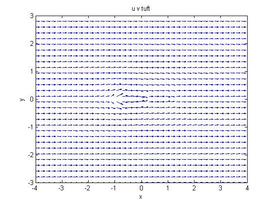
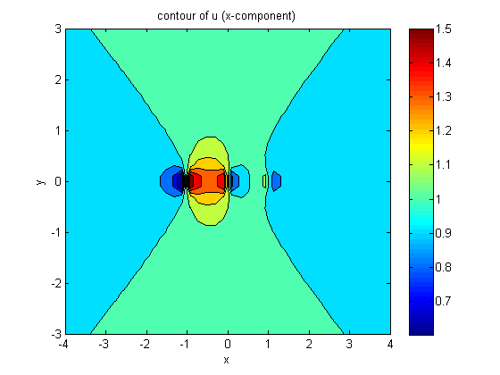
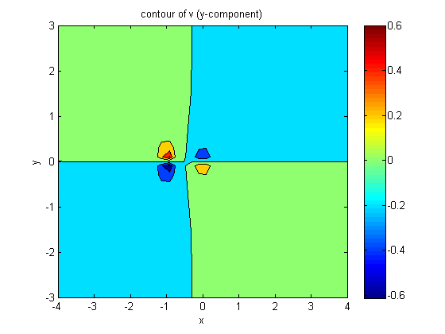
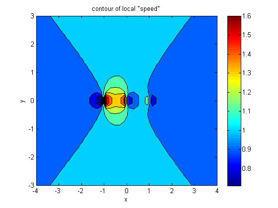

Contents
s1 = .10;
s2 = -.07;
s3 = -.03;
[x,y] = meshgrid(linspace(-4,4,40),linspace(-3,3,30));
F1 = s1.*(x+1)./((x+1).^2+y.^2)+s2.*x./(x.^2+y.^2)+s3.*(x-1)./((x-1).^2+y.^2)+1;
F2 = s1.*y./((x+1).^2+y.^2)+s2.*y./(x.^2+y.^2)+s3.*y./((x-1).^2+y.^2);
q = sqrt(F1.^2+F2.^2);
figure(1)
quiver(x, y, F1, F2);
xlim([-4 4])
ylim([-3 3])
xlabel('x')
ylabel('y')
title('u v tuft')
figure(2)
contourf(x,y,F1)
colormap jet
colorbar
xlim([-4 4])
ylim([-3 3])
xlabel('x')
ylabel('y')
title('contour of u (x-component)')
figure(3)
contourf(x,y,F2)
colormap jet
colorbar
xlim([-4 4])
ylim([-3 3])
xlabel('x')
ylabel('y')
title('contour of v (y-component)')
figure(4)
contourf(x,y,q)
colormap jet
colorbar
xlim([-4 4])
ylim([-3 3])
xlabel('x')
ylabel('y')
title('contour of local "speed"')
   
Joel likes men
time = [0 30];
x0 = [-4 -4];
[Z,QP] = ode45(proj1a,time, x0);
plot(Z,QP)
Error using proj1a (line 5)
Not enough input arguments.
Error in Project1a (line 56)
[Z,QP] = ode45(proj1a,time, x0);